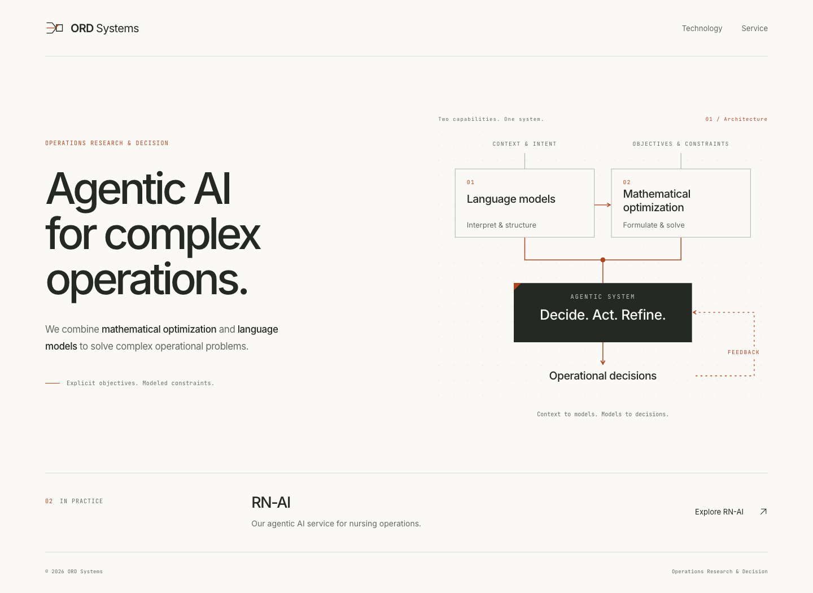

1안 · System architecture
기존 symbol을 유지하고, 두 기술이 하나의 agentic system으로 연결되는 구조를 보여줍니다. 밝은 배경과 절제된 색상으로 회사의 기술적 지향점을 설명합니다.
1안 열기 →
Operations Research & Decision · Mathematical Optimization × Language Models → Agentic AI

경계는 feasible region, 파란 점은 선택된 decision을 의미합니다. wordmark의 O는 symbol을 사용하고, R과 D도 같은 기준으로 만든 vector path입니다.
Symbol SVG · Wordmark SVG